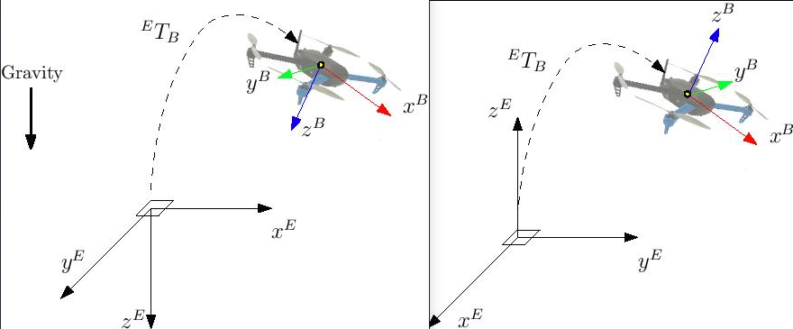

Using Vision or Motion Capture Systems
Before following the instructions below, ensure that your autopilot has a firmware version with the LPE modules enabled. The LPE version of the PX4 firmware can be found inside the zip file of the latest PX4 release or it can be built from source using a build command such as
make px4fmu-v2_lpe. See Building the Code for more details.
This page aims at getting a PX4 based system using position data from sources other than GPS (such as motion capture systems like VICON and Optitrack and vision based estimation systems like ROVIO, SVO or PTAM )
Position estimates can be sent both from an onboard computer as well as from offboard (example : VICON). This data is used to update its local position estimate relative to the local origin. Heading from the vision/motion capture system can also be optionally integrated by the attitude estimator.
The system can then be used for applications such as position hold indoors or waypoint navigation based on vision.
For vision, the MAVLink message used to send the pose data is VISION_POSITION_ESTIMATE and the message for all motion capture systems is ATT_POS_MOCAP messages.
The mavros ROS-MAVLink interface has default implementations to send these messages. They can also be sent using pure C/C++ code and direct use of the MAVLink library. The ROS topics are: mocap_pose_estimate for mocap systems and vision_pose_estimate for vision. Check mavros_extras for further info.
This feature has only been tested to work with the LPE estimator.
LPE Tuning for Vision or Mocap
Enabling external pose input
You need to set a few parameters (from QGroundControl or the NSH shell) to enable or disable vision/mocap usage in the system.
Set the system parameter ATT_EXT_HDG_M to 1 or 2 to enable external heading integration. Setting it to 1 will cause vision to be used, while 2 enables mocap heading use.
Vision integration is enabled by default in LPE. You can control this using theLPE_FUSION parameter in QGroundControl. Make sure that "fuse vision position" is checked.
Disabling barometer fusion
If a highly accurate altitude is already available from vision or mocap information, it may be useful to disable the baro correction in LPE to reduce drift on the Z axis.
There is a bit field for this in the parameter LPE_FUSION, which you can set from QGroundControl. Just uncheck "fuse baro".
Tuning Noise Parameters
If your vision or mocap data is highly accurate, and you just want the estimator to track it tightly, you should reduce the standard deviation parameters, LPE_VIS_XY and LPE_VIS_Z (for vision) or LPE_VIC_P (for motion capture). Reducing them will cause the estimator to trust the incoming pose estimate more. You may need to set them lower than the allowed minimum and force-save.
If performance is still poor, try increasing the
LPE_PN_Vparameter. This will cause the estimator to trust measurements more during velocity estimation..
Asserting on Reference Frames
This section shows how to setup the system with the proper reference frames. There are various representations but we will use two of them: ENU and NED.
ENU has a ground-fixed frame where x axis points East, y points North and z up. Robot frame is x towards the front, z up and y accordingly.
NED has x towards North, y East and z down. Robot frame is x towards the front, z down and y accordingly.
Frames are shown in the image below: NED on the left while ENU on the right.

With the external heading estimation, however, magnetic North is ignored and faked with a vector corresponding to world x axis (which can be placed freely at mocap calibration); yaw angle will be given with respect to local x.
When creating the rigid body in the mocap software, remember to first align the robot's local x axis with the world x axis otherwise yaw estimation will have an initial offset.
Using Mavros
With MAVROS this operation is straightforward. ROS uses ENU frames as convention, therefore position feedback must be provided in ENU. If you have an Optitrack system you can use mocap_optitrack node which streams the object pose on a ROS topic already in ENU. With a remapping you can directly publish it on mocap_pose_estimate as it is without any transformation and mavros will take care of NED conversions.
Without Mavros
If you do not use MAVROS or ROS in general, you need to stream data over MAVLink with ATT_POS_MOCAP message. In this case you will need to apply a custom transformation depending on the system in order to obtain NED convention.
Let us take as an example the Optitrack framework; in this case the local frame has and on the horizontal plane (x front and z right) while y axis is vertical and pointing up. A simple trick is swapping axis in order to obtained NED convention.
We call x_{mav}, y_{mav} and z_{mav} the coordinates that are sent through MAVLink as position feedback, then we obtain:
x_{mav} = x_{mocap} y_{mav} = z_{mocap} z_{mav} = - y_{mocap}
Regarding the orientation, keep the scalar part w of the quaternion the same and swap the vector part x, y and z in the same way. You can apply this trick with every system; you need to obtain a NED frame, look at your mocap output and swap axis accordingly.
First Flight
At this point, if you followed those steps, you are ready to test your setup.
Be sure to perform the following checks:
- Before creating the rigid body, align the robot with world x axis
- Stream over MAVLink and check the MAVLink inspector with QGroundControl, the local pose topic should be in NED
- Move the robot around by hand and see if the estimated local position is consistent (always in NED)
- Rotate the robot on the vertical axis and check the yaw with the MAVLink inspector
If those steps are consistent, you can try your first flight.
Put the robot on the ground and start streaming mocap feedback. Lower your left (throttle) stick and arm the motors.
At this point, with the left stick at the lowest position, switch to position control. You should have a green light. The green light tells you that position feedback is available and position control is now activated.
Put your left stick at the middle, this is the dead zone. With this stick value, the robot maintains its altitude; raising the stick will increase the reference altitude while lowering the value will decrease it. Same for right stick on x and y.
Increase the value of the left stick and the robot will take off, put it back to the middle right after. Check if it is able to keep its position.
If it works, you may want to set up an offboard experiment by sending position-setpoint from a remote ground station.